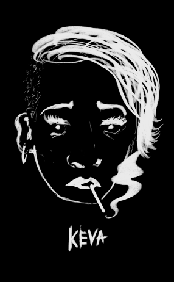
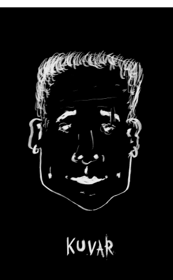
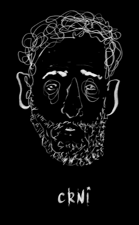
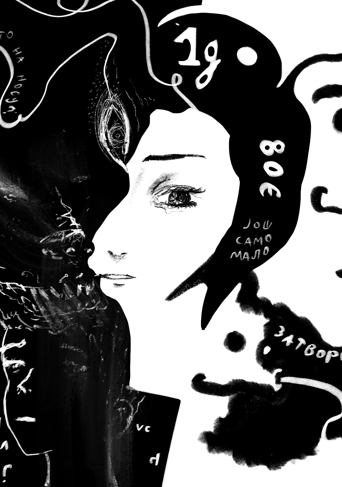
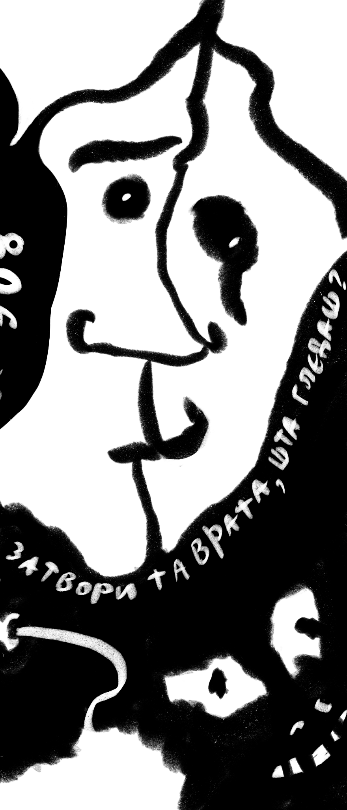

Sve što sam večeras uradio, uradio sam jer sam želeo, a i da mi nije bilo dosadno možda bih otišao u grad i prisustvovao ovome. Želim da znam. Želim da profilišem i da vidim. Tako da evo... krećemo sa pričom.

1
Probudio sam se u 4 popodne, umoran jer sam veče pre toga bio na Halloween žurci do 4 ujutru gde sam pričao sa jednom devojkom koja je donekle slična meni što se tiče detinjstva i studira psihologiju ali mi se ne sviđa fizički tj. nije mi privlačna, što mi je bitno kod devojke, za sada.... Možda budem zreliji ali uvek ću biti iskren prema sebi, i meni je jako bito da mi devojka bude po mom ukusu - lepa, znam da će stariti i sve ali to je normalno, i ja ću. Uglavnom lepo sam se ispričao i zatim došao kući i legao da spavam.
2
Nakon što sam se probudio opet oko 4 popodne bio sam za kompom 4 sata. Smorio sam se i prosto sam želeo da izađem napolje jer nisam mogao više da izdrzim unutra. Hej, ipak sam na godišnjem zar ne ? Pozvao sam B. napolje ali on je bio zauzet, zatim sam pozvao R. i on je rekao da može i onda smo otišli u kafić. A onda smo otišli do njega gde je došao njegov brat iz inostranstva koga R. Zvao ga je Edi. Taj čovek je došao u Novi Sad sa namerom da se “izduva” kako bi lepo počeo svoj novi porodični život koji ga je čekao kod kuće u inostranstvu. Tako sam barem ja skapirao. Oni su me pozvali u izlazak i ja sam rekao “Može.” Nisam imao ništa bolje u planu a kući mi se nije išlo. - Celu noć sam proveo u klubovima. Prvo na Petrovaradinu a zatim u nekoj rupi... ali bukvalno rupi pod zemljom. Na Petrovaradinu smo bili u nekoj modernoj uskoj kafani. Tu je Edi potršio oko 10 hiljada na piće, ja sam izlazio i ulazio iz kafane da bih udahnuo makar malo svežeg vazduha u svoja pluća. Pogled na Novi Sad sa tvrđave je bio jako lep u to vreme. Ja sam im rekao da mi je dosta i da idem kući ili u grad sam da se šetam. A zaim sam se izgubio na tvrđavi. Totalno ne znam da se orientišem. Sada imam osećaj da bi se ponovo izgubio da sam na istom mestu. Tu sam video Edija i prišao mu. On je pokušavao da navata nekoga ko zna gde ima klub koji radi celu noć i gde ima droge. Ja sam mu rekao da ću da odem sa njima a ako mi se ne dopadne u drugom klubu onda ću samo da odem kući. Ali meni se i dalje nije islo kući. Nakon toga klub - Ignite. Kada smo stigli u rupu, pardon, klub dočekao nas je jedan jako sumljiv lik. Edi je kupio sebi, Radošu i Kocki kokain i eksere. Ja sam bio tu, igrao i gledao naokolo. Bilo mi je naravno dosadno, ali bilo je novo iskustvo. U klubu je se puštala glasna tehno muzika. Eksere i spid su ljudi uzimali kao bombone a opet su se krili u VC-u kao da drugi nisu znali šta oni rade. VC - haos. Samo što nije bio usran. Toliko je bilo zamaglilo u njemu od sparine da su sva ogledala bila bela i zamućena. Populacija klubaa je uglavnom deca i ljudi između 15 i 27 godina. Ali bilo je i ljudi izmedju 30 i 60! 80 % ljudi je bilo baš ružno. Nisam nikada uživo video toliko ružnih ljudi na jednom mestu. I to uopšte nije lepo reći. Bile su 2 devojke koje su u licu delovale normalno. Ostalo je jako loše. Hteo sam to da vidim i pričam sa tim ljudima. Edi je onaj koji nas je upoznao sa svim budućim karakterima i uopšte odveo u taj klub. On je onaj stariji lik koje zna sve i sa svima je dobar i ima “šeme”. Uglavnom u oko 5 ujutru sam izašao malo iz kluba i video Edija napolju, išao je da uzme još droge, pa sam ja otišao sa njim da vidim kako to radi i ko mu to prodaje. Nisam se plašio, baš sam onako otvoreno to posmatrao kao sa strane, kao da nisam tu. Zatim smo došli do kola koja su bila “sakrivena” u nekoj mini šumi, sto je bilo bukvalno 20 metara od kluba.

3
Tu je bila neka žena, Ceca, zvao sam je keva jer ima ćerku od 14 godina i jos sina od 8 i jos jednu ćerku od 4. Uglavnom ona i njen muž diluju kokain, spid i sve ostalo klincima. Muž je nizak sa dosta tetovaža , vrlo prijatan covek. Njega sam zvao Kuvar, jer on sprema hemiju. Ona je visoka , podeblja, ima malu ali oblu glavu, crvenu kosu, s jedne strane obrijana, na trojku rekao bih. Nosi naočare za sunce i žvaće žvaku. Vrlo cinicna žena. Vrlo nihilističkom životu opredeljena na neki način. Rekla mi je da je počlea da diluje sa 15 godina i ovo joj je posao, nema ništa drugo sa strane, iako je na početku dilovanje bilo to što je radila sa strane, preraslo je u isplatljiv posao. Jedini posao. Ona i njen muž su zaradili preko 24 hiljade ovo veče od prodaje. Srećni, nudili su nam besplatno drogu, ja sam odbio naravno. - “ Kazi mi, s obzirom da ovo radis ovoliko dugo da li je potraznja veća ili manja ?”, pitao sam je. - “Uf, daleko veća, ovi klinci nisu normalni! “, rekla mi je. - “Da li i ti uzimaš sve što prodajete ?” pitao sam je. - “Pa naravno, ja moram to sve prvo da testiram da se ne bi nešto desilo ovim klincima!”, rekla mi je sa nekom dozom ponosa. - “ A šta ako se nešto desi tebi ?” - “Ma, ne birni se ti za mene, ja sam ojačala na sve to.”
Pitao sam je kako ona čuva svoju ćerku od droge... Rekla je da ne čuva i da joj čak nudi... moraće kad tad da krene sa tim, kaže, ali njena ćerka odbija. Ovo ne znam da li je rekla iz šale ili je ozbiljna, stvarno ne znam. Nije se ni nasmejala, niti dala bilo koji signal da se šali. Rekla mi je da sam joj nešto previse "svilen" ili sumnjiv, jer ne pijem i ne pušim i ne koristim ostale droge. Ja joj nisam rekao da ne konzumiram sve to, nego Edi. Ja takvim ljudima ne bih to rekao jer znam kakavu bi reakciju i podbadanje dobio. Sve u svemu, da, bio sam im cudan ali su me "hvalili" na tome što sam trezan. U klubu sam bio nudjen pivom i sokom ali nisam nista pio, čak ni vodu. Nisam želeo da rizikujem. Verovao sam K. i R. ali ostalima ne. Plus ne bi oni bacili na mene 80€ , koliko i košta 1g kokaina.
4
Cecin muž mi je se žalio kako ga više ništa ne radi i da je prošle nedelje pojeo 17 eksera i nista nije osetio. Tužno. Tolerancija. Sedi lik i odjednom kaže "Ljudi ja već pola sata pušim nezapaljenu cigaru!" A jeste stvarno sedeo i pušio nezapaljenu cigaru! Kakav lik, neverovatno. Tako je bio spor i neartikulisan, što je i za očekivati ali ovaj nivo toga sam samo u filmovima vidjao. On je bio “kuvar” tj. čovek koji pravi i testira koks i eksere. Rekao mi je da naručuje neko posebno ulje iz Holandije koje meša sa zaboravio sam šime i tako jos nekih “tajnih” elemanata da bi napravio kokain. Neverovatno koliko su bili otvoreni ljudi što se tice samog posla koji rade. Ali opet nisu pričali sa bilo kim, tada su smatrali da smo na afteru i svi se “dobro poznajemo”, a i bili su jako nadrogirani. Od svih tamo kuvar i još jedan lik o kojem neću da pricam (jer je kao svaki klasični narkoman iz filma, on je baš bio u najgorem stanju) su bili očigledno najviše uništeni od droge i života koji vode.
5
Na kraju smo seli u kola i otišli kod Crnog. To je bilo oko 8 kada je se zatvorio klub. Zapravo nikad nisam toliko dugo ostao u klubu, celu noć je radio. Ne znam ni jedno mesto u Novom Sadu da tako dugo radi. Kod Crnog je bio after, odnosno jutarnja kafica i odmor. E sad... on je interesantan karakter. Kada sam ga prvi put video, pomislio sam “vau , ovaj umire od droge kakve su mu oči”. Pričao je sa Edijem i rekao je “ Vidi mene ovo (pokazao je na nos) - ne interesuje…”, zatim je namignuo u smislu veruj mi, sto je kasnije cesto radio. Shvatio sam da je on osoba koja zapravo namiguje kada je ima dobru nameru ili pokusava da kaze “veruj mi , sve je ok”. Uglavnom da i on radi koks. Prvo je rekao kako ne, nakon 5 sati je rekao da uzme jednom u 2 meseca, a na kraju mi je rekao da uzme jednom, dva puta u mesecu. On ima oko 50 godina i ima ćerku od 7 godina sa ženom sa kojom je u braku. 
6
Njegova žena ne zna za svet u kojem se on nalazi. Crni radi na gradilištu gde zarađuje dnevno 3000 dinara. To je jedan manji čovek koji je tamnog tena, ima crnu kosu i dugacku neurednu crnu bradu, samim time i nadimak. Velike požutele oči koje srtče jer oko njih je sve tako… modro, neispavano umorno. Lice mu je bilo baš rekao bih umorno od života, jedan od onih ljudi koje mislim da svi znamo sa takvim licem. On je “domaćin”. Došli smo kod njega oko pola 9 ujutru. U njegovom stanu je se osetio neki porodicni duh. Ali opet hladan i usamljen. Tu su bile slike njegove zene i cerke, ali nigne slike sa njim. Gledao sam policu sa knjigama gde su bile knjige njegove žene i zatim mi je pokazao knjige koje on čita (dve). Podsvest snova i Isus spas ili tako nesto uglavnom da, pobožan je, rkeao mi je. Želi da mu ćerka bude lepo vaspitana itd. On je rekao kako je K. jako mutan lik jer malo priča. Što je nešto sto sam predpostavio da ce reći zato sam ja i “pričao” odosno postavljao pitanja. Crni je sumljičave prirode jer je više puta najebao u životu, s obzirom da je dobar sa svima i svima zeli da pomogne. To je barem ono što sam od njega pokupio.

7
Čovek koji malo liči na Bajagu, ima nekako lepe oči, a lice kao neki stari sprski glumac. Vrlo balaga i smirena osoba od 47 godina. On je bio programer preko 20 godina i kaže da ga je to ubilo i smorio se i sada trazi nesto novo, a u medjuvremenu konzumira drogu. On ima neka mišljenja koja su zapravo zrela. Tako je se i ponasao, nekako zrelije i smirenije. Za transport koristi skejtbord.
8
Na kraju smo otišli kod R. i tu je on zaspao a K., Edi i ja smo nastavili da pričamo o "dubokim" temama i onda je se tu Edi zapleo sa sopstvenim mislima i pola sata smo mu nesto objasnjavali oko kosmosa, a zatim on nama, i tu sam ja odustao samo. K. i ja smo seli u taxi i otišli svojim kućama. Na kraju to je bilo jedno interesantno iskustvo koje ne želim vise da se ponovi. Bio sam, video sam i to je to. Malo mi je bilo drago za mene što ne vodim takav zivot kao oni, ali nisam o tome toliko ni razmišljao. Zaboravio sam da se ovakve stvari dešavaju i da su ovakvi ljudi deo društva. I sada malo bolje razumem, da iako njima treba pomoć, oni je ne traže, oni su odabrali drugačiji put. Kraj.
 
24. Octobar 2019.
Hvala na čitanju.